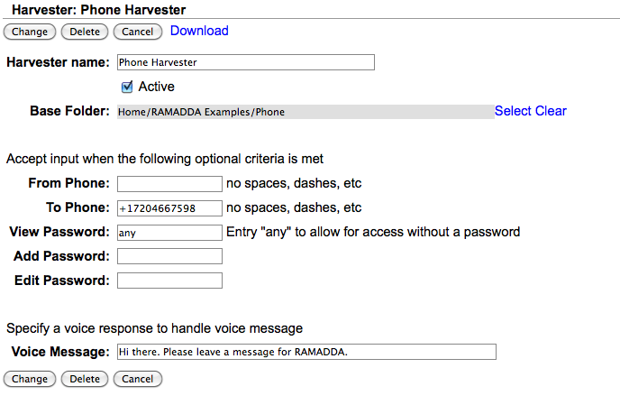

http://<your ramadda>/phone/twilio/sms http://<your ramadda>/phone/twilio/voice e.g.: http://ramadda.org/repository/phone/twilio/sms http://ramadda.org/repository/phone/twilio/voiceYou then need to define the following properties on your RAMADDA server (e.g., in a phone.properties file in your RAMADDA home directory)
#Twilio Application SID twilio.appid= #Twili authorization token (for reading the transcription) twilio.authtoken= #If you have a paid twilio account set this to true to transcribe voice #twilio.transcribe=true or falseThis is the application SID and the authorization token you can get from your Twilio account dashboard.

The From Phone and To Phone are optional. If defined, this harvester will only access calls from/to these numbers.
There are 3 access levels specified by (potentially) different passwords - View, Add and Edit. If you enter "any" for these passwords then no password is required for that action.
To enable receiving voice messages specify a Voice Message response.